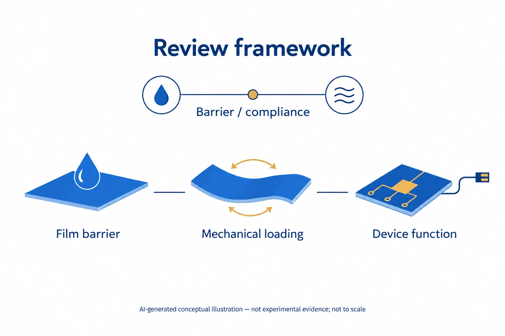

Research context and placement
OLED barrier and mechanical stability fit protective packaging. Its breadth from conventional displays to biointegration requires a qualified boundary; skin conformity is secondary.
Boundary case: assigned to the closest interface for navigation. Read the rationale and cross-links together; the primary theme does not delimit the study. Placement of foundational work does not establish direct bioelectronic application.
Research background
Flexible encapsulation must resist permeation and repeated deformation. Inorganic cracking, polymer permeability and interfacial defects are distinct failure routes. The review is useful as a framework connecting those routes to device requirements, rather than as a material-name catalogue.
Approach and advances
Combining barrier and compliant layers does not eliminate interfacial defects. Bioelectronics adds chemical stability and tissue interaction requirements. A low permeability value for an isolated film therefore cannot by itself establish reliability of the integrated device.

AI-generated concept of a flexible-encapsulation review framework separating film-barrier, mechanical-loading and device-function evaluation. The icons denote categories; a droplet or circuit symbol is not a measurement of permeability or retained function.
The droplet symbolizes moisture exposure, not a WVTR method or contact-angle result. The bending and circuit icons do not specify test setups, deformation conditions, retained performance or an optimal material.
This is not a reproduced paper figure and does not establish permission to reuse the original figure.
Generated in ChatGPT on the web from concepts in a public paper and checked for conceptual consistency within the selected main-text reading and stated independent-review scope. This does not claim a complete main-text or supplement audit. Display processing is limited to WebP encoding, without cropping or content editing.
Evaluation and conditions
Water-vapor tests differ in principle and sensitivity, including cup, instrument, impedance and calcium methods. Temperature, humidity, thickness and detection conditions must accompany comparisons. Post-bending barrier measurements are needed to connect deformation history with protection.
Key findings
Brightness, voltage and dark spots reveal device degradation, not the same quantity as film permeability. One mechanical test also cannot represent every use condition. The review supports linking film, deformed-film and operating-device evidence in stages.
Limits and open questions
Low-temperature compatibility, large-area defect control and manufacturing reproducibility remain practical constraints. Accelerated aging also needs an appropriate failure model. Cited numerical studies were not individually audited, so no universally best barrier is selected here.
Related external research
Ultraflexible organic photonic skin
Integrated skin-mounted emitters and photodetectors provide an experimental link to the review's thin encapsulation and conformity.
A device demonstration does not establish long-term stability or implant safety for every encapsulant.
Abstract checkedCorresponding-author verification
Jungmok Seo: corresponding authorThis record concerns Jungmok Seo’s correspondence designation. Author order or an asterisk alone is not treated as confirmation; this check is separate from verification of the research content.
- Correspondence evidence source ↗
Corresponding Author — Jungmok Seo
Author information: Kijun Park and Jungmok Seo blocks · public_publisher_author_information_read
- Main-text review scope
- Read public Wiley §3.1–3.3 (barrier/mechanical/device evaluation), §5.3–5.4 (bioelectronics/practical limitations) and the opening of §6; cited numerical results/processes were not individually audited.
- Supplementary review scope
- Supporting information was not comprehensively read. A main-text citation to supplementary results does not count as direct inspection of those results.
- Pending verification
- Test conditions, comparison tables and process reproducibility in the cited original studies require separate checks. The current account is limited to evaluation frameworks and design tradeoffs; it does not establish numerical rankings.
COVERAGE & OUTREACH
Coverage and outreach
Links are checked for their relationship to this paper. Media publication does not establish independent reporting or additional experimental validation.
No related outreach link was verified against its body within these searches. This does not establish that none exists.
Channel coverage and search log for all 101 records →Sources and verification scope
Read public Wiley §3.1–3.3 (barrier/mechanical/device evaluation), §5.3–5.4 (bioelectronics/practical limitations) and the opening of §6; cited numerical results/processes were not individually audited.
The additional commentary is editorially approved within the stated evidence scope. This does not imply complete verification of all main-text and supplementary material.
- Additional main-text review scope
- Read public Wiley §3.1–3.3 (barrier/mechanical/device evaluation), §5.3–5.4 (bioelectronics/practical limitations) and the opening of §6; cited numerical results/processes were not individually audited.
- Additional supplementary review scope
- Supporting information was not comprehensively read. A main-text citation to supplementary results does not count as direct inspection of those results.
- Public publication baseline ↗ · #86 · 2026-10-03
- Crossref metadata ↗: Only public bibliographic metadata registered with Crossref was checked. This does not mean that the publisher page, abstract, or full text was read; full-text verification in the school Chrome session remains pending. license_urls lists registered links and does not establish permission to redistribute text or figures. It may include TDM or posting-policy links.
- Encapsulation Strategies for OLEDs: From Conventional Devices to Flexible and Biointegrated Applications ↗
public_publisher_abstract · Abstract; selected Introduction; checked 2026-10-03 - Ultraflexible organic photonic skin ↗
PubMed_abstract_via_Europe_PMC_API · MED/27152354; abstractText; DOI 10.1126/sciadv.1501856; read 2026-10-03. - Encapsulation Strategies for OLEDs: From Conventional Devices to Flexible and Biointegrated Applications ↗
public_publisher_selected_full_text_read · §3 Evaluation methods; §5.3 Encapsulation for Bioelectronic Devices - Encapsulation Strategies for OLEDs: From Conventional Devices to Flexible and Biointegrated Applications ↗
public_publisher_selected_full_text_read · §5.3–5.4; opening §6 - Encapsulation Strategies for OLEDs: From Conventional Devices to Flexible and Biointegrated Applications ↗
public_publisher_selected_full_text_read · §3.1 WVTR; §3.2 Mechanical Stability; §3.3 Additional Evaluation Methods - Encapsulation Strategies for OLEDs: From Conventional Devices to Flexible and Biointegrated Applications ↗
public_publisher_selected_full_text_read · §5.3; §5.4 barrier/mechanical trade-offs - Encapsulation Strategies for OLEDs: From Conventional Devices to Flexible and Biointegrated Applications ↗
public_publisher_selected_full_text_read · §5.4 Practical Challenges and Industrial Viability - Encapsulation Strategies for OLEDs: From Conventional Devices to Flexible and Biointegrated Applications ↗
independent_reviewer_selected_main_text · Public Wiley Introduction; §3.1 measurement; §3.2 mechanical; §5.3 bioelectronics; §5.4 manufacturing/practical passages; selected paragraphs, not whole review - Additional commentary source ↗
Research background · §3 Evaluation methods; §5.3 Encapsulation for Bioelectronic Devices · public_publisher_selected_full_text_read - Additional commentary source ↗
Approach and advances · §5.3–5.4; opening §6 · public_publisher_selected_full_text_read - Additional commentary source ↗
Evaluation and conditions · §3.1 WVTR; §3.2 Mechanical Stability; §3.3 Additional Evaluation Methods · public_publisher_selected_full_text_read - Additional commentary source ↗
Key findings · §5.3; §5.4 barrier/mechanical trade-offs · public_publisher_selected_full_text_read - Additional commentary source ↗
Limits and open questions · §5.4 Practical Challenges and Industrial Viability · public_publisher_selected_full_text_read - Additional commentary source ↗
Connections to related work · §5.3 application requirements; previously read external abstract · public_publisher_selected_full_text_read - Additional commentary source ↗
Connections to related work · Abstract; title and DOI: 10.1126/sciadv.1501856; previously verified external evidence reused · public_external_abstract_read